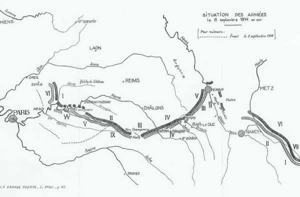
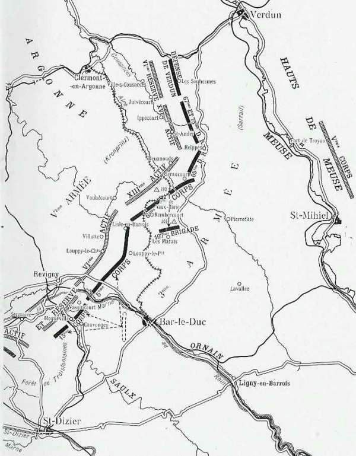
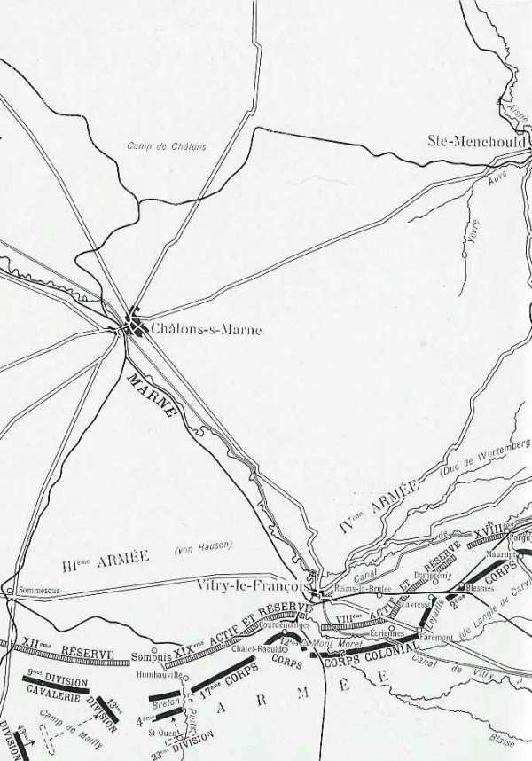
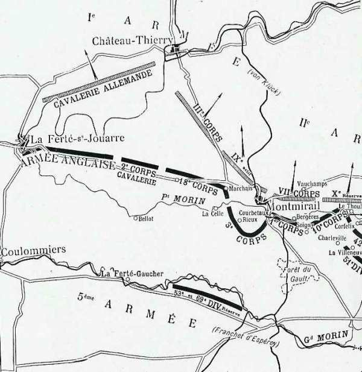
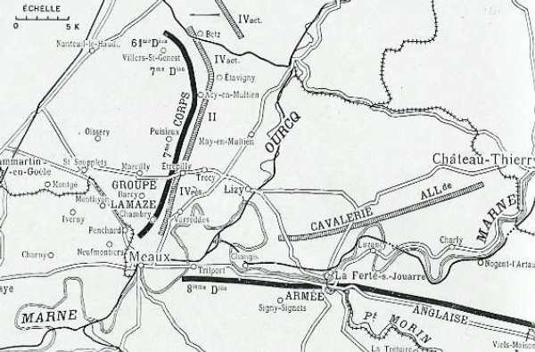
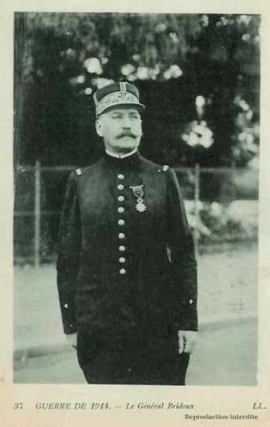
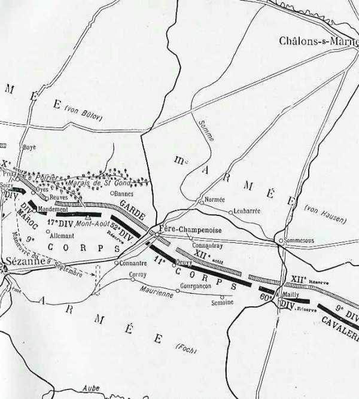
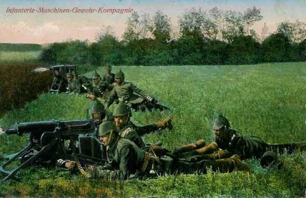

Le 8 septembre 1914
La bataille arrive au point mort : A gauche, la manuvre de von Kluck a enrayé le mouvement enveloppant de Maunoury ; au centre, Foch et de Langle de Cary contiennent avec peine les efforts des masses qui leur sont opposées ; à droite, Sarrail se maintient à grand peine et est menacé dans le dos par le 5e C.A. prussien. Il reste du côté allié deux éléments de victoire : l’armée anglaise et l’armée de Franchet d’Esperey (V armée).
G.Q.G. français

Le G.Q.G. émet l’instruction générale n° 17 entre 19 et 20h : I « Devant les efforts combinés des armées alliées d’aile gauche, les forces allemandes se sont repliées en constituant deux groupements distincts.
 L’un qui paraît comprendre le 4e C.A.R., 2e C.A. et 4e C.A. combat sur l’Ourcq à l’ouest contre notre VIe armée qu’il cherche lui-même à déborder vers le nord.
L’autre comprenant le reste de la Ie armée allemande (3e, 9e C.A. et les IIe et IIIe armées allemandes) reste opposé, face au sud, aux Ve et IXe armées françaises.
La réunion de ces deux groupements paraît assurée seulement par plusieurs D.C., soutenues par des détachements de troupes de toutes armes en face des troupes britanniques ».
L’un qui paraît comprendre le 4e C.A.R., 2e C.A. et 4e C.A. combat sur l’Ourcq à l’ouest contre notre VIe armée qu’il cherche lui-même à déborder vers le nord.
L’autre comprenant le reste de la Ie armée allemande (3e, 9e C.A. et les IIe et IIIe armées allemandes) reste opposé, face au sud, aux Ve et IXe armées françaises.
La réunion de ces deux groupements paraît assurée seulement par plusieurs D.C., soutenues par des détachements de troupes de toutes armes en face des troupes britanniques ».
II « Il paraît essentiel de mettre hors de cause l’extrême droite allemande avant qu’elle puisse être renforcée par d’autres éléments que la chute de Maubeuge a pu rendre disponibles.
La VIe armée et les forces britanniques s’attacheront à cette mission. A cet effet, la VIe armée maintiendrait devant elle les troupes qui lui sont opposées sur la rive droite de l’Ourcq ; les forces anglaises franchissant la Marne entre Nogent-l’Artaud et La Ferté-sous-Jouarre se porteront sur la gauche et sur les derrières de l’ennemi qui se trouve sur l’Ourcq.
La Ve armée couvrirait le flanc droit de l’armée anglaise en dirigeant un fort détachement sur Azy et Château-Thierry. Le C.C. franchissant la Marne, au besoin derrière ce détachement et derrière les colonnes anglaises, assurerait d’une façon effective la liaison entre l’armée anglaise et la Ve armée. A sa droite, la Ve armée continuerait à appuyer l’action de la IXe armée en vue de permettre à celle-ci de passer à l’offensive. Le gros de la Ve armée, marchant droit au nord, refoulera au-delà de la Marne les éléments qui lui sont opposés. »
IIe armée française
Malgré la fatigue extrême des troupes, les débouchés sud de la forêt de Champenoux sont maîtrisés.
Le 20e C.A. attaque avec les 70e et 39e D.I.
Le 16e C.A. se porte en avant et progresse sur la rive droite de la Mortagne mais suite à une contre-attaque, doit regagner sa position de départ.
En conclusion : La reprise de la Bozule et d’une partie de la forêt de Champenoux referme la route vers Nancy. Guillaume II est frustré d’une entrée triomphale dans Nancy. L’activité allemande se reporte en Woëvre et sur les Hauts de Meuse.
IIIe armée française

La liaison du centre français est en grand péril, mais de rapides déplacements de troupes sur le front de la IIIe armée et l’intervention d’un nouveau C.A. (21e), prélevé sur la Ie armée, rétablit sur ce point l’équilibre. A la droite, la situation reste critique, malgré la résistance du 2e C.A.
17e C.A. : Il est attaqué par le 19e C.A. saxon, sur les rives du ruisseau du Puits. Les Français perdent un peu de terrain puis le regagnent.
12e C.A. : Un bombardement violent est dirigé par l’artillerie allemande sur Courdemanges, le Mont Moret, Châtel-Raould, tandis que l’infanterie allemande attaque sur Courdemanges. Vers 8h, Courdemanges et le Mont Moret tombent aux mains des Allemands. Toute la journée, une lutte âpre se déroule au nord de Châtel-Raould. Le soir, le Mont Moret est repris.
Corps colonial : Il participe aux combats qui se déroulent entre Châtel-Raould et Courdemanges. A l’est de la voie ferrée et près du canal de Saint-Dizier, la 2e division parvient à se maintenir.
2e C.A. : Le 8e C.A. allemand, descendant de Reims-la-Brûlée, attaque le front Ecriennes - Favresse et Blesmes. Le front français reste inébranlable.
A la droite du 2e C.A., les Allemands attaquent furieusement durant toute la journée. A 17h, les Allemands entrent dans les ruines de Pargny. Maurupt est pris et repris.
Pendant que Sarrail résiste face à l’ouest, il est informé que le fort de Troyon, en plein sur ses arrières, est bombardé avec des obus de gros calibre et menacé par le 5e C.A. allemand. Cependant, malgré une dépêche du G.Q.G. l’autorisant à replier sa droite pour éviter qu’elle ne soit enfermée dans Verdun, Sarrail fait sauter derrière lui les ponts de la Meuse et décide de maintenir son armée sur place.
Il recherche la liaison avec la droite de la IVe armée sur la rive gauche de l’Ornain tout en couvrant Bar-le-Duc. Une offensive allemande se dessine contre la jonction des 5e et 6e C.A. Sarrail y fait jeter la 7e D.C. (d’Urbal).
 - 15 ko")
Les Allemands attaquent en direction de Bar-le-Duc. Une brigade du 15e C.A. attaque Vassincourt, à la gauche du 5e C.A. Cette localité avait été mise en état de défense par les Wurtembergeois. Le 112e ne peut dépasser l’entrée du village, fauché par les mitrailleuses.
En même temps, toute une brigade allemande dirige une contre-attaque contre la gauche de l’armée. Deux compagnies opèrent une attaque dans leur flanc. Il se produit une mêlée épique. Les Allemands finissent par être rejetés.
IVe armée française

Au point du jour, une poussée violente se produit contre la droite de la IVe armée. Le 18e C.A.R. allemand presse fortement le 2e C.A. français, de Pargny-sur-Saulx à l’est de la forêt des Trois-Fontaines. L’aide de la IIIe armée est réclamée et le 15e C.A. dirige une brigade vers l’ouest tandis que le gros opère en direction de Contrisson et de Vassincourt. Les aviateurs rendent des services précieux à l’armée française en repérant les rassemblements de batteries allemandes.
En matinée, l’aile opposée à la IVe armée allemande, le 17e C.A., est violemment attaquée par une division du 12e C.A. allemand, qui marche à l’ouest du ruisseau de Sompuis, alors que le 19e agit à l’est, vers Humbauville. L’attaque est repoussée avec de fortes pertes.
L’action est très vive sur tout le front de la IVe armée.
Une brigade du 1e C.A. allemand opère au sud de Sompuis
Le 19e entre Humbauville et Courdemanges.
Le 8e C.A. vers Frignicourt et Vauclerc, le 8e C.A.R. sur Favresse et Blesmes.
Le 18e sur la voie ferrée jusqu’à Sermaize, par Pargny-sur-Saulx.
Le 18e C.A.R jusqu’au sud d’Andernay et de Mognéville.
Le front français est orienté vers le nord-ouest. Les Français maintiennent leurs positions.
En soirée, le 17e C.A. français a perdu du terrain, malgré l’approche du 21e (général Legrand). La 23e division conserve toutefois Humbauville. L’intervention du 21e C.A. se borne à limiter le recul de l’extrême gauche de la IVe armée.
de Langle accumule à gauche toutes ses réserves pour dégager l’armée Foch, et notamment le 21e C.A. qui vient de débarquer de Lorraine.
Ve armée française

L’aile gauche de l’armée d’Espérey continue sa poursuite et gagne un terrain appréciable. A son aile droite, le 10e C.A. appuie solidement la 42e division de l’armée Foch. Cette collaboration a été un des facteurs du succès final.
Le corps Conneau a pour mission d’opérer entre le 18e C.A. et l’armée britannique. Son axe de marche est Meilleray, Montolivet, Vendières.
La 4e division a ordre de continuer la poursuite par La Ferté-Gaucher, Bellot, la Chapelle-sur-Chézy.
La 8e division doit faire mouvement par Saint-Barthélémy, Villeneuve-sur-Bellot, Viels-Maisons.
La 10e doit progresser par Saint-Barthélémy, Verdelot, L’Epine-aux-Bois, Viffort.
Voici les mouvements des unités en matinée :
a 4e division de cavalerie, en liaison avec les Anglais, a un très violent engagement à Bellot, d’où elle rejette les chasseurs à cheval de la Garde.
Le 18e C.A. marche en deux colonnes vers le Petit Morin. La colonne de gauche trouve le cours du Petit Morin libre, le traverse à La Celle, gravit les pentes au nord de la rivière, déloge de l’Epine-aux-Bois le détachement allemand qui l’occupe et facilite le passage de la division de droite.
Le 3e C.A. marche à droite du 18e et a comme mission de continuer l’offensive en direction générale de Tréfols, Montmirail, Corrobert. On prévoit une forte résistance sur le Petit-Morin.
Le 1e C.A. avait reçu dans la nuit du 7 au 8 un ordre lui donnant comme objectif le plateau de la Rionnerie et la Haute-Vaucelle. Dès le matin, le 1e C.A. se porte immédiatement au sud du Petit-Morin mais les Allemands avaient fortifié la rive nord pendant la nuit. Les progrès de ce C.A. sont bientôt arrêtés.
Le 10e C.A. a ordre de marcher par Boissy-le-Repos, Fromentières sur Chapelle-sous-Orbais.
A 11h, le général Conneau annonce que les Allemands se retirent sur Château-Thierry.
Le 18e C.A. prend un dispositif d’attaque aux abords du Petit-Morin. Sous un feu violent d’artillerie, la 35e division n’avance qu’avec lenteur. Dès 11h, le régiment de tête de la 36e division occupe Vandières mais ensuite, le terrain est âprement disputé et les progrès laborieux.
La gauche du 10e C.A. arrive à Soigny et essaie de prendre de flanc les défenses allemandes que le 1e C.A. doit attaquer de front. Comme le 1e C.A. n’a pas pu progresser, la liaison ne peut s’établir. La division de droite doit soulager la 42e division de l’armée Foch en attaquant le 10e C.A allemand. Malgré un feu violent de l’artillerie allemande, elle débouche au nord de Charleville et progresse sur le plateau.
Montmirail est attaqué de front par le 3e C.A. que l’artillerie lourde allemande, établie sur un plateau derrière la ville, arrête toute la journée. Le 1e C.A., obliquant vers le nord-est, refoule les éléments du 10e C.A.R. allemand, alignés le long du Petit Morin à l’est de Montmirail et commence à gagner du terrain vers le nord dans la direction de Vauchamps. A sa droite, le 10e C.A. parvient à se saisir des villages de la vallée, Boissy-le-repos et Le Thoult.
La 73e brigade (3e C.A.) tient Hochecourt, les Chanots, la 74e tient Rieux avec des fractions vers Montrobert. Ordre est donné de franchir le Petit-Morin vers Mécringes en combinant ce mouvement avec la division Mangin qui enlèverait Montmirail. On opèrerait vers minuit. Le C.A. est en contact le soir avec le crochet défensif à droite de l’armée von Bülow (entre Montmirail et Fontenelle). Marchais en Brie est enlevé d’assaut et la 13e D.I. allemande se réfugie derrière la voie ferrée Montmirail - Artonges.
Les avant-postes du 10e C.A. parviennent jusqu’à Le Thoult.
L’attaque de Montmirail par la 73e brigade échoue mais la situation de la IIe armée allemande est assez précaire.
VIe armée française

L’offensive doit être entamée par les 55e et 56e divisions. Le 1e C.C. doit reprendre l’opération de la veille sur le plateau de Bargny, Lévignen.
A la droite de l’armée Maunoury, la 45e division (Drude) dessine dès le matin son offensive sur la ligne Barcy - Chambry avec Etrepilly et Vareddes comme objectifs. Le cimetière de Chambry est pris et repris plusieurs fois. Le 3e zouaves subit de fortes pertes.

L’offensive du 7e C.A. est dirigée sur Rosoy-en-Multien et Crouy-sur-Ourcq. Dès 3h, le 7e C.A. attaque Acy et Vincy-Manuvre mais les Allemands tiennent ferme.
Au groupe Lamaze, la 112e brigade attaque en direction d’Ocquerre, la 11e sur Plessis-Pacy, Saint-Faron. Toute l’artillerie tire sur le front Etrepilly - Trocy. L’artillerie allemande brise cette attaque.
Le C.C. doit se porter dans la région de Levignen, Bargny, Ormoy-le-Davien. A ce moment, le général Sordet est avisé de son remplacement par le général Bridoux, qui commandait jusqu’alors la 5e D.C. Les chevaux sont épuisés par les nombreuses tâches incohérentes qu’a dû remplir le C.C. depuis le début de la campagne.

Sur ordre du général Bridoux, Cornulier-Lucinière lance sa division par Crépy sur Troësnes, en passant au sud de Villers-Cotterêts. Le but est de produire un effet de surprise. Arrivées sur un plateau, les pièces d’artillerie prennent pour objectif de fortes réserves marchant du nord au sud en ordre assez dense, à 4.500 m environ.
Galliéni se rend au quartier général de la VIe armée, à Saint-Soupplets. Maunoury craint que les Allemands, renforcés, prennent l’offensive contre sa gauche. Galliéni lui répond que dans la position actuelle, il fixe l’ennemi à l’ouest tandis qu’au sud l’arrivée de l’armée anglaise sur la Marne constitue un danger nouveau pour von Kluck. Il est essentiel de maintenir ses positions. En soirée, toutes les attaques de la VIe armée sont enrayées. Les troupes stationnent sur place, en se fortifiant.
L’Etat-Major de la VIe armée craignant une offensive allemande, prend des dispositions pour organiser une ligne éventuelle de repli par Le Plessis-Belleville, Saint-Soupplets, Monthyon. En cas de retraite, Maunoury s’engage à manuvrer de manière à maintenir les Allemands face à l’ouest, afin de faciliter l’action éventuelle de l’armée anglaise.
IXe armée française

Pendant la journée du 8, les armées de von Bülow et von Hausen vont essayer de percer le centre des armées françaises, la partie du front tenue par la IXe armée. Les Allemands espèrent, en défonçant le front français, pourvoir tourner par l’ouest la Ve armée et par l’est la IVe, et rétablir une situation qui devient critique. Si leurs attaques échouent, la retraite s’imposera.
La 42e division, grâce à l’attaque de flanc contre le 10e C.A. allemand qu’effectue la Ve armée, passe à l’offensive, réoccupe La Villeneuve, Soisy. Sa gauche s’avance jusqu’à Corfélix. Sa gauche se cramponne au signal du Poirier, en liaison avec la division du Maroc.
Au 9e C.A. : dès le matin, la division du Maroc entame une vigoureuse offensive vers Saint-Prix et réalise rapidement des progrès importants. Elle s’empare du signal du Poirier mais l’artillerie allemande rend la position intenable. La brigade Blondlat doit évacuer vers 18h Oye et Reuves et se replier sur Allemant. Les Allemands suivent de près et s’avancent vers Mondement.
Au 11e C.A. : pendant la nuit, les Allemands attaquent les avant-postes de Normée et Lenharrée. Le C.A. recule de 10 km dans la direction de Fère-Champenoise et Connantray et va s’établir sur la Maurienne à Corroy, Gourgançon et Semoine. Sa gauche se relie au 9e C.A. du côté de Connantre.
La gauche et la droite de la IX armée sont refoulées mais Foch ne considère pas la partie comme perdue. Il proclame même la situation « excellente » et ordonne de reprendre l’offensive.
Armée anglaise : sur le Petit Morin
Voici la position des différents C.A. en matinée
3e C.A. : au sud de Meaux.
2e C.A. : au nord de Coulommiers.
1e C.A. : de Chailly à Jouy-sur-Morin, à cheval sur le Grand-Morin, entre Coulommiers et La Ferté-Gaucher.
Comme la Ve armée rencontre une forte résistance et que la VIe armée affronte la presque totalité de la Ie armée allemande, French en conclut qu’il n’a devant lui que de la cavalerie appuyée par de l’artillerie. French envisage donc de passer aussi promptement que possible les deux Morins et la Marne. Après cette opération, l’armée serait face au nord-ouest, presque sur la ligne de retraite de la Ie armée allemande.
A La Trétoire, (nord-ouest de Rebais), le 1e C.A rencontre une vive résistance au nord du Petit Morin, défendu par les cavaliers et les chasseurs à pied de von der Marwitz et von Richthofen.
Les troupes anglaises se portent en avant pour enlever le passage du Petit Morin, ce qui a lieu à 11h. Peu après, l’avant-garde est au contact d’un élément de chasseurs de la Garde. Cette unité perd une centaine d’hommes sur 250. La marche reprend sur Hondevilliers, Rebais et La Trétoire.
L’artillerie allemande ouvre le feu du nord-est de Boitron et des mitrailleuses battent efficacement le passage du Petit Morin. Il faut mettre en uvre des canons et des obusiers et faire intervenir le Worcestershire Regiment vers le Moulin-Neuf et le Gravier.
Le pont sur le Morin est pris à 13h30. Le 2e Grenadiers Guards passe également le Petit-Morin à La Forge. La cavalerie allemande dont certaines fractions se défendent jusqu’au milieu de l’après-midi sur le Petit Morin, dissuade les Anglais d’entamer la poursuite. Ils n’envoient pas d’éclaireurs pour reconnaître les ponts de la Marne. Quant au C.C. Conneau, il a avancé de 3 km en une journée.
Un peu après midi, le rideau tendu par Richthofen est crevé à l’est à hauteur de la route de Rebais à Château-Thierry. Tout l’espace entre la route de Coulommiers à La Ferté-sous-Jouarre, le cours de la Marne et la route de Château-Thierry à Montmirail se vide de troupes allemandes.
En soirée,
Le 3e C.A. a sa tête de colonne entre Signy-Signets et Jouarre, face à La Ferté.
Le 2e C.A. borde le Petit Morin entre Jouarre, Archet et saint-Cyr.
Le 1e C.A. est au nord du Petit Morin, bordant la route de La Ferté à Viels-Maisons.
Une brèche a été ouverte par von Kluck en ramenant des C.A. vers l’ouest pour combattre l’armée de Maunoury.
L’armée anglaise a mis deux jours pour franchir les vingt kilomètres qui séparent le Grand Morin de la Marne.
Armée belge
La cavalerie fait savoir que le débouché du Demer est aisé.
Les 2e,3e et 6e divisions reçoivent l’ordre de distribuer aux troupes deux rations de vivres de réserve. L’ordre d’attaque est transmis :
Une attaque aura lieu vers Aarschot dans le but d’occuper la localité et de prendre pied sur la rive sud du Demer. Cette attaque sera effectuée par la D.C. et la 7e brigade mixte.
L’attaque sera couverte à l’ouest d’Aarschot sur la ligne Demer - Dyle par les 2e et 3e divisions.
La 5e division maintiendra son gros sur ses lignes mais poussera des pointes offensives pour retenir un maximum de forces adverses.
La 6e division portera une brigade à Boom, une à Rumst, le restant de la division se trouvant à Duffel.
En résumé, l’armée belge va effectuer un vaste mouvement de Wetteren à Aarschot ayant pour objet
de s’emparer le 9 à l’aube des débouchés du Demer à Aarschot et Betekom (D.C. + 7e brigade)
de relier cette attaque à la ligne générale (2e et 3e divisions).
de faire exécuter des démonstrations par les 1e et 5e divisions dans leur secteur respectif jusqu’au contact avec l’adversaire.
de placer les brigades de la 6e division à Boom, Rumst et Duffel, prêtes à soutenir les 1e et 5e divisions en cas d’attaque sur la droite belge.
O.H.L.
Moltke prend peur. Il reçoit coup sur coup deux mauvaises nouvelles. C’est d’abord un message de von Bülow, envoyé vers 4h15 « Positions maintenues jusqu’à présent contre forces supérieures. Le 8, aile gauche renouvellera attaque, soutenue par deux divisions saxonnes. Par suite pertes très élevées capacité combat IIe armée ne représente plus que celle de trois C.A. ».
Ensuite, l’O.H.L. intercepte un message radio émis par la D.C. de la Garde faisant savoir que les alliés ont forcé la ligne du Petit Morin et que le C.C. von Richthofen se retire derrière le Dolloir. Cette retraite signifie que le front est rompu entre les Ie et IIe armées.
Il est nécessaire de faire appel à la VIIe armée en voie de réunion en Belgique, mais il faut un délai de cinq jours pour l’acheminer vers le champ de bataille.
Moltke décide d’envoyer le lieutenant-colonel Hentsch, un officier de son état-major, à l’aile droite sur l’Ourcq et la Marne. Moltke lui donne des instructions en présence du chef de la section des opérations, le lieutenant-colonel Tappen. Ces instructions, chose incroyable, ne sont pas consignées par écrit, d’où plusieurs interprétations.
Hentsch a déclaré avoir reçu les pleins pouvoirs pour prescrite « en cas de nécessité aux armées de se retirer sur la ligne Sainte-Ménehould - Reims - Fismes - Soissons.
Tappen prétend que les instructions données à Hentsch le chargeaient seulement « au cas où les mouvements rétrogrades seraient déjà entamés, d’essayer de les diriger de manière à combler le vide existant entre les Ie et IIe armées. », ce qui est tout autre.
Hentsch se met en route aussitôt, vers 11 heures. Il se rend d’abord aux quartiers des Ve, IVe et IIIe armées. Il y trouve le monde plein de confiance, surtout à la IIIe armée. De là, il se rend au Q.G. de la IIe armée vers 20h (Montmort). Von Bülow fait son rapport : la gauche de l’armée a progressé, mais l’aile droite, qui s’étend de Montmirail vers Chézy, a dû rester sur la défensive et ne contient l’adversaire qu’avec peine. L’intention de l’armée est de maintenir ses positions le lendemain si elle n’est pas enveloppée.
Ce qui gâte tout, c’est que la Ie armée se trouve loin, et qu’une brèche est ouverte entre les deux armées, bouchée difficilement par la cavalerie et les chasseurs. Pendant cette conférence, arrive un compte-rendu annonçant que l’aile droite a été tournée ou refoulée et qu’il faut la replier derrière la Verdonnelle. Il s’ensuit que la brèche entre les Ie et IIe armées augmente encore de 15 km. Hentsch rend compte à l’O.H.L. « situation IIe armée sérieuse mais pas désespérée ».
Dans la soirée du 8, on ne prend pas encore la décision de battre en retraite.
Ie armée allemande
La 43e brigade de réserve (von Lepel) a été rappelée de Bruxelles et atteint Verberie par Compiègne.
La 3e D.I., accrochée à la croupe étroite à l’est de Chambry, a été prise d’enfilade par les batteries de la 8e D.I. française et sa gauche a subi l’attaque des Marocains dans la soirée. Von Kluck lui donne l’autorisation de se replier de la crête à l’est de Vareddes sur le mouvement de terrain qui se dresse dans le triangle Etrepilly - Vareddes - Congis.
Le Q.G. de l’armée se rend à la Ferté-Milon.
Von Kluck tente une manuvre enveloppante contre la VIe armée française vers Nanteuil-le-Haudouin. Le 9e C.A. s’avancera jusqu’à Crépy-en-Valois.
Afin d’enfoncer la VIe armée française, von Kluck donne ordre au 4e C.A. de se porter de Rebais vers Betz. Les Allemands réussissent à s’emparer de cette localité. La séparation stratégique avec l’armée de von Bülow est consommée. Quarante kilomètres séparent le front de la Ie armée de celui de la IIe armée.
Un renseignement d’aviation signale à von Kluck que l’armée britannique marche beaucoup plus rapidement que les jours précédents et s’approche du cours inférieur du Petit Morin. La défense du front sud de la Ie armée se présente sous d’assez fâcheuses conditions : elle ne dispose à Vareddes et à La Ferté-sous-Jouarre que de la 2e D.C. soutenue par cinq bataillons de chasseurs. La ligne de front longe le Petit Morin depuis son embouchure jusqu’aux abords de Montmirail et se prolonge par celle du 1e C.C. Si les Anglais passent à leur tour la Marne dans la journée, ils tomberont le lendemain sur les arrières de la Ie armée, qui se trouvera prise en étau entre les troupes de French et celles de Maunoury.
A 11h20, un ordre de von Kluck prescrit au 9e C.A. d’assurer la protection contre un mouvement de flanc des Anglais en occupant la ligne de la Marne, de la Ferté-sous-Jouarre à Nogent-l’Artaud. Le 1e C.C. doit couvrir le Petit Morin entre la Ferté et Villeneuve.
Le 9e C.A. ne laisse sur la Marne qu’une brigade entre La Ferté-sous-Jouarre et Nogent-l’Artaud (brigade von Kraewel). Comme elle ne longe pas la Marne, les passages ne sont pas tenus en amont de La Ferté-sous-Jouarre.

IIe armée allemande
Pour le centre de la IIe armée, la journée commence mal. La gauche de l’armée Foch (42e D.I. et D.I. du Maroc), par une vigoureuse attaque, reprend dans la matinée le terrain perdu au sud du Petit Morin et de la partie occidentale des marais de Saint-Gond. Un régiment franchit même la rivière à Talus-Saint-Prix mais le mouvement est enrayé par l’ artillerie lourde allemande. Von Bülow passe à son tour à l’offensive et après un violent bombardement, l’infanterie prussienne retraverse les marais de Saint-Gond, reprend Soisy, Oyes, Reuves et approche de Mondement.
L’aile droite de von Bülow se trouve dans la soirée en mauvaise posture. Son crochet défensif (de Montmirail à Chézy-sur-Marne) est enfoncé par la Ve armée et son front fléchit aux environs de Montmirail. Les Français peuvent prendre d’enfilade les tranchées orientées face au sud. Seule une prompte retraite permettrait d’éviter la catastrophe. Von Bülow télégraphie à von Kluck « Mon aile droite est au nord de Montmirail. Nécessité pressante que vous protégiez mon flanc droit contre les Anglais ».
IIIe armée allemande
Von Hausen a projeté de lancer son infanterie sur les lignes françaises le 8 à l’aube, de les percer par des charges à la baïonnette et de pénétrer jusqu’aux batteries. Cette attaque doit être effectuée par le groupement Kirchbach (23e division de réserve et 32e D.I.) auquel est rattachée la 2e D.I. de la Garde, du côté des marais.
L’opération réussit au-delà de toute espérance. La 11e C.A. français, en position derrière la Somme, est complètement surpris et se débande. La ligne de la Somme tombe rapidement aux mains des Allemands. Fère-Champenoise est perdue.
Suite au recul du 11e C.A., la 9e D.C. doit rétrograder dans la région de Sommesous. La droite du 9e C.A., complètement découvert, doit pivoter autour du Mont-d’Août, le front vers l’est. Une contre-attaque de la droite du 9e C.A. dans la direction de Fère-Champenoise, réussit à reprendre un peu de terrain, mais la situation reste critique pour la droite de la IXe armée, menacée d’être coupée de la IVe.
En refoulant le 11e C.A., s’emparant d’une partie de son artillerie, et faisant perdre à la 18e D.I. près de la moitié de son effectif, von Hausen remporte le succès tactique le plus marqué de la bataille de la Marne.
IVe armée allemande
Le 8e C.A. entame une progression méthodique avec la coopération de l’artillerie. Sur le front entre Sompuis et Vitry-le-François, l’offensive avance quelque peu mais bientôt le 19e C.A., décimé par les obus, reflue sur la ligne de départ.
Dans la trouée de Revigny, l’aile droite de la IVe armée française (2e C.A.) est obligée de reculer sensiblement au sud de Sermaize. A la faveur de ce mouvement rétrograde, les Allemands commencent à s’infiltrer entre les IVe et IIIe armées par la vallée de la Saulx, affluent de l’Ornain.
Ve armée allemande
Au nord de la trouée de Revigny, la IIIe armée française repousse toutes les attaques des troupes du kronprinz, mais le 5e C.A. allemand après avoir traversé la Woëvre, atteint la ligne des forts qui, le long des Hauts de Meuse, relient les camps retranchés de Verdun et de Toul. Il concentre ses efforts contre le fort de Troyon, qui tient ferme pendant toute la journée sous le bombardement.
Armée belge
Les troupes territoriales occupent Lochristi, Destelbergen, Heusden, Melle, Merelbeke, Zwijnaarde et Zwevegem dans le but de protéger la ligne de retraite de l’armée.